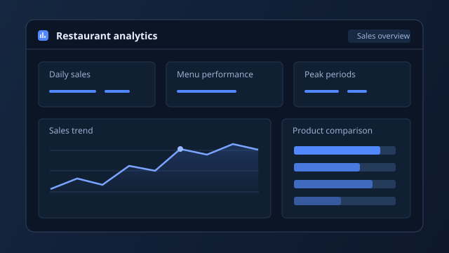
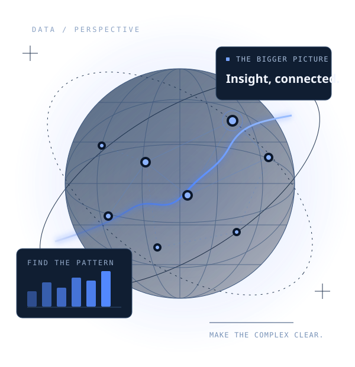
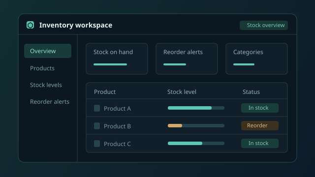

Concept visualizationRestaurant Sales Dashboard
Turning daily sales into a clearer view of restaurant performance, busy periods, and menu items that need attention.
Explore the projectBusiness analytics portfolio
Hi, I’m Rodge Trione Estepa.
I’m a Business Analytics student turning complex data into dashboards, practical tools, and stories that make sense.
Curious by nature. Analytical by practice.

From data to something useful

Concept visualizationTurning daily sales into a clearer view of restaurant performance, busy periods, and menu items that need attention.
Explore the project
Concept visualizationA practical stock management application designed to track inventory and make reorder decisions easier.
Explore the projectA little about me
When a messy dataset becomes a chart someone can act on, the work starts to mean something. That’s what draws me to analytics.
My focus is on data cleaning, statistics, and communicating the result clearly. I’m always looking for a better way to tell the story.
More about my approachHave a question or an idea?
Interested in my work, a collaboration, or a conversation about data? I’d love to hear from you.